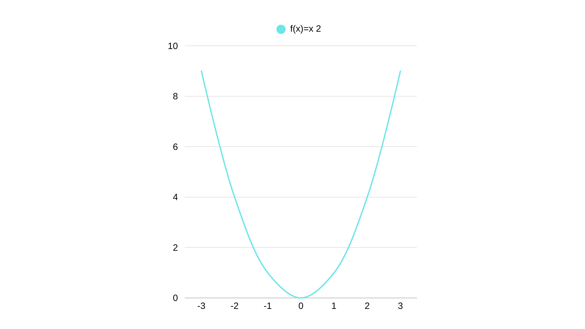

I. Definição
A função quadrática, também chamada de função do 2º grau, é uma função do tipo:
f(x) = ax² + bx + c
Onde:
a, b e c são números reais
a ≠ 0 (se a fosse zero, seria uma função afim)
Essa função é usada para modelar fenômenos que têm um ponto de virada, como lançamentos de projéteis, lucros máximos ou mínimos em negócios, e formatos parabólicos em construções.
Exemplo: f(x) = x² – 4x + 3 → aqui, a = 1, b = –4, c = 3.
II. Gráfico
O gráfico de uma função quadrática é sempre uma parábola. Ela pode ter duas formas principais: "em forma de U" ou "de cabeça para baixo".
Como construir:
- Identifique os coeficientes a, b e c.
- Determine a concavidade (ver tópico III).
- Calcule o vértice (ver tópico VII).
- Encontre as raízes (zeros), se existirem (ver tópico IV).
- Marque esses pontos no plano cartesiano e esboce a parábola.
Exemplo: f(x) = x² – 6x + 8
→ É uma parábola com concavidade para cima, vértice em (3, –1), e raízes em x = 2 e x = 4.
III. Concavidade
A concavidade da parábola depende do sinal do coeficiente a:
- a > 0 → concavidade para cima (forma de "U")
- a < 0 → concavidade para baixo (forma de "capacete")
Exemplo:
• f(x) = 2x² – 3x + 1 → a = 2 > 0 → concavidade para cima
• f(x) = –x² + 4x – 3 → a = –1 < 0 → concavidade para baixo
IV. Zeros da Função Quadrática
Os zeros (ou raízes) são os valores de x para os quais f(x) = 0. Ou seja, onde o gráfico corta o eixo x.
Para encontrá-los, resolvemos a equação:
ax² + bx + c = 0
Usamos a fórmula de Bhaskara:
x = [–b ± √(b² – 4ac)] / (2a)
O valor dentro da raiz (∆ = b² – 4ac) determina quantas raízes existem:
- ∆ > 0 → duas raízes reais diferentes
- ∆ = 0 → uma raiz real (dupla)
- ∆ < 0 → nenhuma raiz real
Exemplo: f(x) = x² – 5x + 6
→ a = 1, b = –5, c = 6
→ ∆ = (–5)² – 4·1·6 = 25 – 24 = 1
→ x = [5 ± √1]/2 → x₁ = 3, x₂ = 2
Portanto, os zeros são x = 2 e x = 3.
VI. Máximo e Mínimo
Dependendo da concavidade, a parábola tem um ponto mais alto ou mais baixo:
- Concavidade para cima (a > 0) → ponto de mínimo
- Concavidade para baixo (a < 0) → ponto de máximo
Esse ponto é chamado de vértice e representa o menor ou maior valor da função.
Aplicações:
• Em física: altura máxima de um lançamento vertical.
• Em economia: lucro máximo ou custo mínimo.
VII. Vértice da Parábola
O vértice é o ponto (x_v, y_v) onde a parábola atinge seu valor máximo ou mínimo.
As coordenadas do vértice são dadas por:
x_v = –b / (2a)
y_v = f(x_v)

Exemplo: f(x) = –x² + 6x – 5
→ a = –1, b = 6, c = –5
→ x_v = –6 / (2·–1) = 3
→ y_v = f(3) = –(3)² + 6·3 – 5 = –9 + 18 – 5 = 4
O vértice é (3, 4) e, como a < 0, esse é o ponto de máximo.
💡 Dica Final: Como Analisar uma Função Quadrática
- Observe o sinal de a para saber a concavidade.
- Use Bhaskara para encontrar os zeros (se existirem).
- Calcule o vértice para localizar o ponto de máximo ou mínimo.
- Esboce o gráfico marcando os pontos principais.
- Lembre-se: a parábola é simétrica em relação ao eixo x = x_v.
🧠 Conclusão
A função quadrática é uma das mais importantes da matemática aplicada. Dominar seus elementos — gráfico, zeros, vértice e concavidade — permite interpretar fenômenos físicos, econômicos e geométricos com precisão.
Da próxima vez que vir uma ponte, um arco ou um objeto lançado para o alto, lembre-se: você está diante de uma parábola!